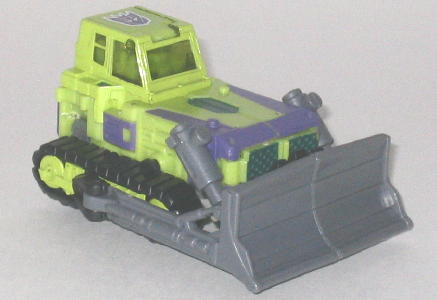
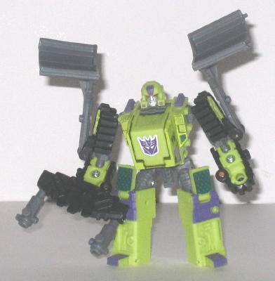
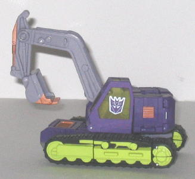
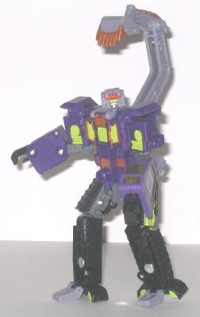
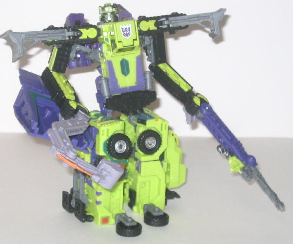

Bonecrusher
& Scavenger (Universe; Target Exclusive)
Bonecrusher
& Scavenger (Universe; Target Exclusive)
Price
: $17 (U.S.)
Overall Rating
: 7.8
Although originally this
set was originally slated for release in the main Universe line, the non-exclusive
portion of the line was cancelled because of the lack of stores willing
to carry it, so here the set is, more than a year later, as a Target exclusive
at a slightly cheaper price!
Bonecrusher


Allegiance
: Decepticon
Size
: Deluxe
Difficulty of Transformation
: Easy
Color Scheme
: Light pasty green,
black, moderately dark gray, and some transparent light green, royal purple,
dark bluish green, light red, and silver
Individual Rating
: 9.5
(NOTE: Because this is a repaint, this is
not a full-blown review. This mainly covers any changes made to the mold
and the color scheme, and merely compares it to RiD Wedge. For a review
on the mold itself, read the review of RiD Wedge
here
.)
Like his teammates
Long
Haul and Hightower
, Bonecrusher has the traditional G1 Constructicon
color scheme, which fans have been begging to be used on these molds ever
since they were first released. And this new Constructicon paint job looks
GREAT. The light green and purple are just the right shades, and go extremely
well together. The gray and black colors, used more often here than on
Long Haul and Hightower, are used to help ground the scheme a bit more
in reality, and are nice contrasting colors. Although most of the paint
apps are the same in their placement as on the RiD Wedge mold, there are
a few new small paint apps to add more detail, like the new small purple
apps on the sides of his head and the tops of his shoulders. The paint
apps look great, and really make the toy look even cooler. The dark blue-green
accents are also a great color choice. Really, color-wise, I have no problems
with this toy whatsoever. It's as good as the mold is going to get, and
the colors actually make even little ol' Wedge look like a bonafied Decepticon!
No mold changes have
been made to Universe Bonecrusher.
Scavenger


Allegiance
: Decepticon
Size
: Deluxe
Difficulty of Transformation
: Medium
Color Scheme
: Black, light grayish
purple, royal purple, and some light pasty green, silver, light red, transparent
light green, dull metallic bronze, and moderately dark gray
Individual Rating
:
7.4
(NOTE: Because this is a repaint, this is
not a full-blown review. This mainly covers any changes made to the mold
and the color scheme, and merely compares it to RiD Grimlock. For a review
on the mold itself, read the review of RiD Grimlock
here
.)
Unlike his three partners,
Scavenger has a bit of a "reverse Constructicon" color scheme in that his
main color is purple, with only some accents of light green. It still looks
very nice, however, and helps to differentiate the team at least a little.
The black and gray are used as good contrasting colors, like on Bonecrusher,
but considering that Scavenger's main color is already dark in this case,
it doesn't work out quite as well as on his pack-mate. The light grayish
purple is an interesting secondary color to use, however, and looks pretty
cool. The bronze paint apps also add something else new to the mix, and
look very nice on the chest and especially the new apps on the shovel.
The red "worn" paint apps on Scavenger's "shovel-forehead" is probably
my favorite paint app of the bunch, as it really makes Scavenger look a
bit more evil than he otherwise would have. Still, with that head mold,
Scavenger is the only one of the four new Constructicons that doesn't quite
pull off the "evil Decepticon" look. He just looks too... good-natured.
No mold changes have
been made to Universe Scavenger.
Constructicon
Devastator (Combination of Bonecrusher, Scavenger, Long Haul, and Hightower)

Size
: Gestalt (combination of four
Deluxes)
Difficulty of Transformation
: Very
Hard
Color Scheme
: Light pasty green,
royal purple, moderately dark gray, black, light grayish purple, and some
dull metallic bronze, transparent light green, light red, silver, dark
bluish green, dark metallic bluish gray, dull gold, and light yellow
Individual Rating
: 6.4 ("Long Haul
" and "Hightower" modes); 6.5 ("Scavenger" mode)
(NOTE: Because this is a repaint, this is
not a full-blown review. This mainly covers any changes made to the mold
and the color scheme, and merely compares it to RiD Landfill. For a review
on the mold itself, read the review of RiD Landfill
here
.)
The new form of Devastator
has a very good, unifying color scheme and, as has already been said, is
a great G1 Devastator homage. Problem is, the mold still looks as clunky
and oddly proportioned as ever, and it's a royal pain to get the toys into
their gestalt form, as it's so aggravatingly complicated when it comes
to the arms. Not to mention this gestalt has never held together incredibly
well, anyways. Plus, the overly clunky appearance doesn't carry over the
allegiance switch of the mold to Decepticon-- even despite the colors,
the toy still looks pretty Autobot-ish in this configuration. It's defintiely
the best-looking of the three paint jobs so far, but it's still not really
worth forming the gestalt in the first place, and instead it's just better
to enjoy the individual toys, in my opinion.
No mold changes have
been made to Universe Devastator-- he still has the same three gestalt
configurations that Landfill has, but only one is used for conservation
of web site space.
The Universe Bonecrusher
& Scavenger set is pretty nice, even if you don't get Long Haul and
Hightower (though I recommend the latter over the former), since the combined
mode isn't much more than a big mess anyways. The individual toys are rather
cool-looking, though-- although Scavenger's mold has some questionable
looks in robot mode, the color schemes are to die for, and are what many
Transfans have been waiting for for a long time. And at $17 for the both
of them, they're cheaper than the original RiD versions to boot! Recommended.
No Stats
Review by Beastbot
Back to Transformers:
Universe Index